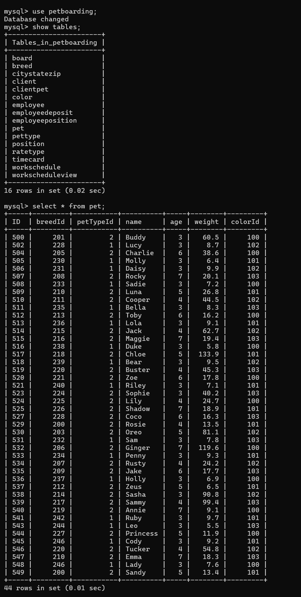

Three-Tier Distributed Enterprise Web Application

Project Description
This project involved developing a comprehensive three-tier distributed enterprise web application using Java Servlets, JavaServer Pages (JSP), Apache Tomcat server, and a MySQL database backend. The application follows enterprise architecture patterns with clear separation between the presentation layer, business logic layer, and data access layer.
The system implements sophisticated role-based authentication and authorization mechanisms that support multiple user levels, each with distinct database privileges and access rights. Different users can log in with varying levels of access to the database operations and application features, ensuring proper security and data protection.
The application manages a supply chain system with multiple interconnected entities including jobs, parts, shipments, and suppliers. Server-side business logic is implemented using Java Servlets to handle HTTP requests, process user input, and manage application flow. Database operations are executed using JDBC with prepared statements and callable statements to ensure both security (preventing SQL injection) and optimal performance.
The project demonstrates enterprise-level development practices including session management for maintaining user state, transaction management for ensuring data consistency, proper error handling across all application layers, and separation of concerns through the Model-View-Controller (MVC) design pattern.
Skills Learned
- Understanding and implementing three-tier architecture patterns for scalable enterprise applications
- Developing web applications using Java Servlets and JavaServer Pages (JSP)
- Implementing database connectivity using JDBC with connection pooling and resource management
- Designing and implementing role-based authentication and authorization systems
- Deploying and configuring web applications on Apache Tomcat server
- Writing secure SQL queries using prepared statements and callable statements
- Managing HTTP sessions and maintaining user state across multiple requests
- Separating business logic from presentation layer using server-side processing
- Implementing security best practices including SQL injection prevention and input validation
- Working with normalized relational database schemas and maintaining referential integrity
- Applying Model-View-Controller (MVC) design pattern in enterprise web development
- Implementing comprehensive error handling and validation across application tiers